-

The McIntyres of Kilmonivaig
A Tale of Two Entire Families - Part 1
There are two McIntyre families tied into our family history. The story told here is about the family descended from Duncan McIntyre and Catherine Kennedy, our direct ancestors. They were at one time farming in Kilmonivaig in Inverness-shire and later living in Glasgow. There's a likelihood they had always owned property there, which is where their sons, Alexander, William, Allan, Duncan Kennedy and possibly Archibald resided while studying at the Glasgow College. These names will turn up again later when their paths intertwine in Australia with those of another family of McIntyres, possibly blood relatives, who also came to be related by marriage, enterprise and friendship. More is told about them in Part 2 of the tale, the McIntyres of Glenartney.Kilmonivaig
Our McIntyre ancestors can be traced back to the Scottish Parish of Kilmonivaig in what is now Inverness-shire. Duncan McIntyre and his wife Catherine Kennedy had twelve of their children registered on a single record at a place called Unachan, written on the record as Munachan or perhaps Mnuachan. Since only Gaelic was spoken in this area, the spelling can vary and the handwriting is often atrocius. On old maps, Unachan, sometimes spelt Aonachan, is located near the High Bridge which crossed over the river Spean. Around the middle of the nineteenth century a newer crossing was built where the modern village of Spean Bridge is now situated. Unachan is just west of that bridge and Duncan McIntyre has been said to be a farmer there, or more specifically, a sheep farmer, but what his actual profession was, is another matter.
Duncan McIntyre and Catherine Kennedy
had the following children:
Ann 26.03.1793 – unknown John 01.05.1794 – 07.04.1857 d. Pitnacree Catherine 01.06.1796 – 02.08.1835 d. Glasgow Allan Rev. 15.07.1798 – 31.05.1870 d. Sydney Alexander Rev. 11.01.1801 – 11.03.1883 d. Tradeston Archibald 15.07.1804 – 19.08.1861 d. Aberdeen William Rev. 06.03.1806 – 12.07.1870 d. Sydney Angus 06.12.1809 – unknown Donald 03.03.1811 – 02.09.1860 d. Inverell Neil 16.07.1813 – unknown Ewen 18.09.1814 – unknown Duncan Kennedy Rev. 16.04.1817 – 17.12.1899 d. Sydney  Kilmonivaig has had a number of churches and the information we now have might easily have originally belonged to any of them. The hand written record is likely a transcription, possibly after a new church was built, or after the floods of 1845. Where the children were actually born and where they were registered could well be different places.
Kilmonivaig has had a number of churches and the information we now have might easily have originally belonged to any of them. The hand written record is likely a transcription, possibly after a new church was built, or after the floods of 1845. Where the children were actually born and where they were registered could well be different places.
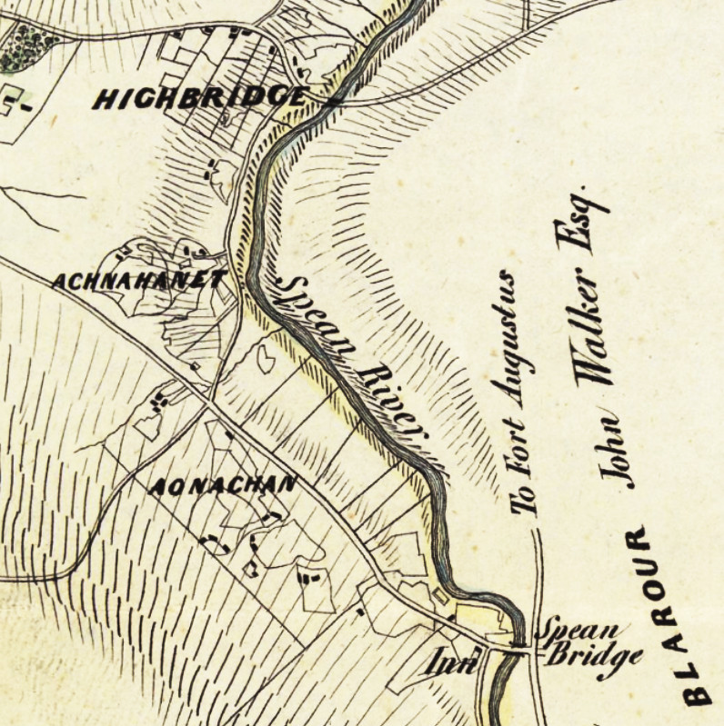Lochaber and InverlochyInverlochy bordered by the Spean River
Unachan, or Aonachan, was part of the Inverlochy Castle Estate owned by the Duke of Gordon. The estate was just to the north of Ben Nevis, in the area of Lochaber, which before the nineteenth century, was a district made up of the large original parishes of Kilmallie and Kilmonivaig. Lochaber extended from the northern shore of Loch Leven, known as Nether Lochaber, to beyond Spean Bridge and Roybridge, known as Brae Lochaber.
Some experts claim the name Lochaber means "loch of swamps", a "historic water feature", and Unachan was no exception, being itself often described as a rather swampy place. As was the fashion at the time, the Gordons had the idea of running a half a dozen or so large sheep farms on the estate rather than having a multitude of small tenancies. It's possible that the advertisements they ran for land leases around 1800 enticed Duncan to the area to try his hand at farming. With the death of the 4th Duke of Gordon in 1826, the game had changed, and this may have nudged the family to move on.
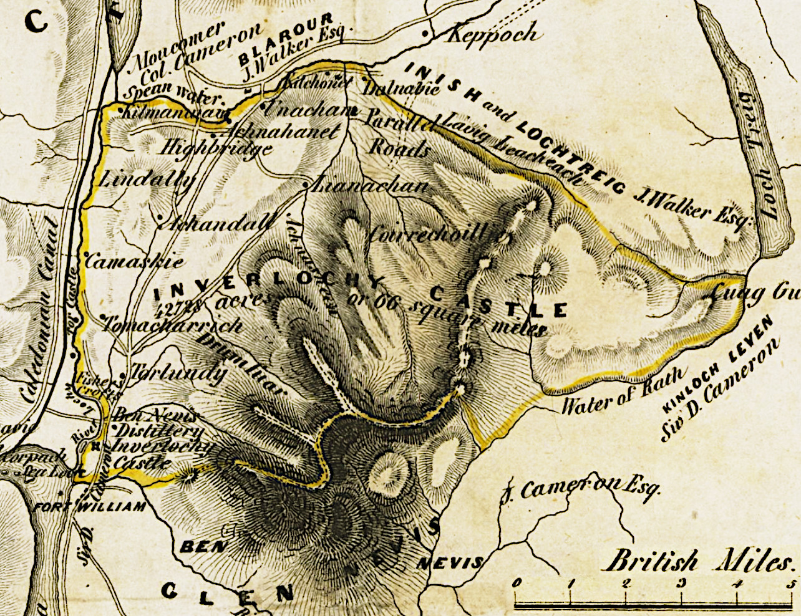Inverlochy Castle EstateInverlochy Castle Estate c1842
This map shows Unachan situated close to the northern boundary of Inverlochy estate where the Spean water flows. In the south west corner is the town or garrison of Fort William which was built alongside the ruins of Inverlochy castle.
Over the southern boundary is Glen Nevis and the highest mountains in Scotland and the British Isles, Ben Nevis, Càrn Mor Dearg, Aonach Mòr, and Aonach Beag.
Ye'll take the high road and I'll take the low road
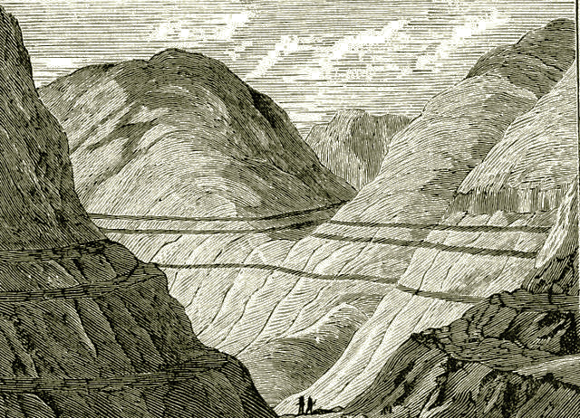As can be seen from the map, there is a place alongside Unachan called Parallel Roads. Early in the ninenteenth century a lot of interest was generated about Parallel Roads which featured prominently in the development of geological science. Even by 1838 Charles Darwin was still so fascinated by the phenomenon he visited and studied the area, writing a paper on it which was published a year later. The Parallel Road areas of Lochaber still continue to attract a great deal of attention to this day.Parallel Roads
So what are Parallel Roads, and what makes them continue to inspire research and speculation? They appear as a series of massive horizontal lines carved into and running across mountain sides. In days of old the locals thought they were the work of fairies. The currently trending theory is that each one was an ancient ice age shore-line. Despite its remoteness and isolation from city life, Unachan proved to be close to a hub of scientific activity with experts in their fields visiting from all over.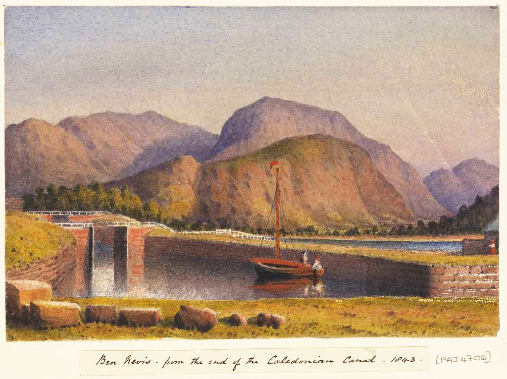That wasn't the only activity around Lochaber at the time. From 1803 to 1822, the Caledonian Canal was being built in an attempt to create new employment for those displaced by the sheep farming.The Caledonian Canal and Ben Nevis c.1843 by Edward Gennys Fanshaw
The enterprise somehow backfired when the local workers were absent most of the time for harvest or other pursuits. As a result, a flood of Irish workers were brought in and raised tensions.
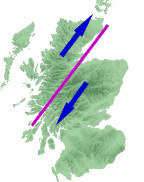And Whose Fault Is That ?The movement of the tectonic plates of the Great Glen Fault
Speaking of geological phenomena and the Caledonian Canal can't be complete without a mention of the Great Glen Fault. The valley surrounding the Spean River is known as Spean Glen and it runs into the Great Glen of Scotland, Glen Albyn, where the Caledonian Canal was built.
The Great Glen itself runs from Fort William at the head of Loch Linnhe to Inverness on the Moray Firth effectively dividing the highlands into two sections, the Grampian Mountains to the south-east and the Nortwest Highlands to the north-west. Millions of years ago these two sections moved in different directions as the result of being part of huge colliding tectonic plates. Even though recently mostly inactive, there are still slight residual movements nowadays resulting in moderate tremors.
Lochaber No More
Whatever the case, it was also time for the McIntyres to move and some of the older lads of the family had reached an age to gain some higher learning. The number one address for a proper education at the time was the Glasgow College. Both Allan and William, who later became reverends of the Free Church of Scotland, were educated there. By 1828 they had their own Academy in Glasgow. That was also the year of probably the last mention of Kilmonivaig on any Scottish record for the family, when Archibald at the tender age of 24 was betrothed to Jessie Dewar Halling aged 20. Jessie's mother Catherine Halling was living and working in Maryhill on the north side of Glasgow, which was likely another enticement for the newly-weds to settle near there. The occasion of that wedding could also have served as an opportunity to have a double celebration to mark the final removal of the McIntyres from Lochaber to Glasgow.
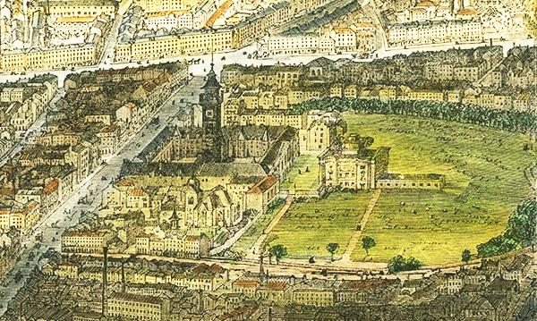The Glasgow College
Glasgow College with its 140 foot tower seen here in the High Street. Later the college was restyled as Glasgow University.
Duke street runs across the top of the picture. The bright building in the middle of Duke Street is where Allan and William first had their Academy.
On the far right the Molendinar burn runs down past the college garden seen as a large green area.
Glasgow, or Glaschu in Gaelic, developed out of an original core settlement that sprang up around the Molendinar burn. At that time the burn ran wildly through a deep ravine past the Glasgow Cathedral on its way down to the Clyde river. By 1836 the Molendinar had been tamed and a crossing over it to reach the Glasgow Necropolis was built and came to be known as the Bridge of Sighs.
The Molendinar was only a couple hundred meters away from the McIntyres' Academy at 21 Duke street. Running off Duke street and alongside the burn was the aptly named Burnside lane and off that was a place called Claybrae. This was the address their mother Catherine had at the time of her passing in 1841. Whether or not that place had been the family home since they moved from Kilmonivaig can only be left to speculation.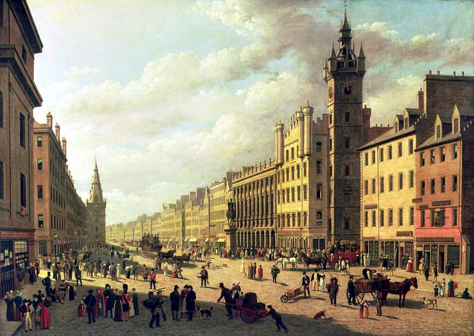Trongate or Old Glasgow Cross 1826
by John Knox (1778–1845)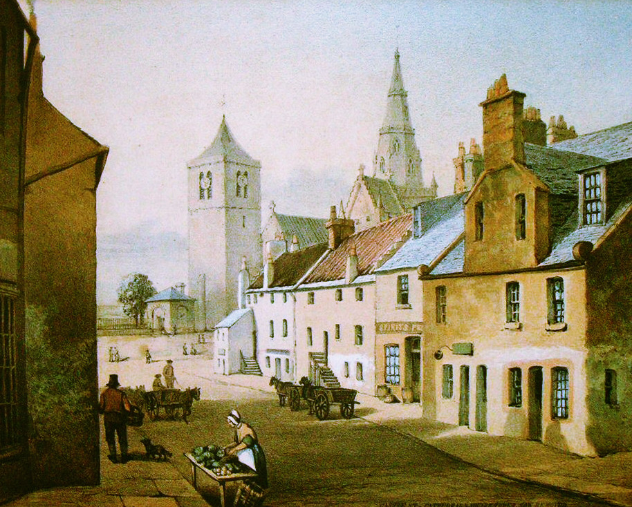By the 1820's Glasgow was a bustling city with newly built areas springing up all over. At the forefront, were two neighbouring developments in the Gorbals district on the south bank of the Clyde.An early painting of the village near the Molendinar burn with the Glasgow Cathedral in the background. The cathedral, also known as Saint Mungo's was dedicated to Kentigern, better known as Saint Mungo, patron saint and founder of Glasgow.
Tradeston was developed in the 1790's and was soon followed, from 1802 to 1818, by the adjoining Laurieston, an ambitious enterprise of Glasgow merchant James Laurie. And in these two places was where the McIntyres set up shop and school.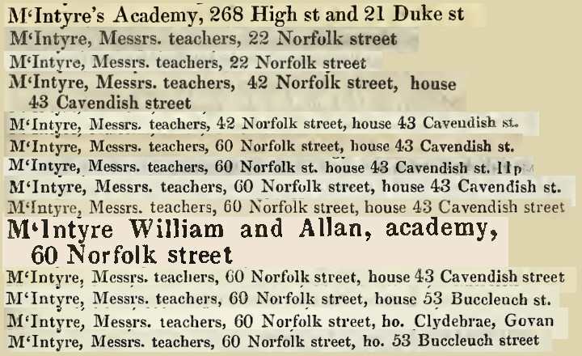The McIntyre BrothersExtracts from the Glasgow Postal Directories 1828-1842
Teachers and Preachers
In 1828 McIntyre's Academy was listed in the Glasgow Post Office Directory at two addresses. One was 268 High street, in the same street as the Glasgow College. The other was around the corner at 21 Duke street the same address where J. McIntyre, very likely John, had a worsted wool shop. By 1830, William had joined Allan, and together they were listed as McIntyre, Messrs, teachers, at 22 Norfolk street on the south side of the Clyde in the new upmarket district of Laurieston. 1832 saw another move to 42 Norfolk street with a residence at 43 Cavendish street. They remained in Norfolk street until 1834, but had moved a few doors down to number 60. William and Allan are listed together as teachers up to and including 1837 but William migrated to Australia that year. From then on, it can only be assumed that the continued listing of McIntyre, Messrs, teachers referred to Allan and his brother Alexander who also was a teacher, and eventually Duncan Kennedy, the youngest brother. The teacher-brothers remained residing at Cavendish street till 1839 having moved to 53 Buccleuch street.
McIntyres on the Move
At the time of the birth of Archibald and Jessie's son Duncan in 1830, Archibald was a spirit dealer. Two daughters followed, with Elizabeth being born in 1832 and Flora in 1835.
Archibald and Jessie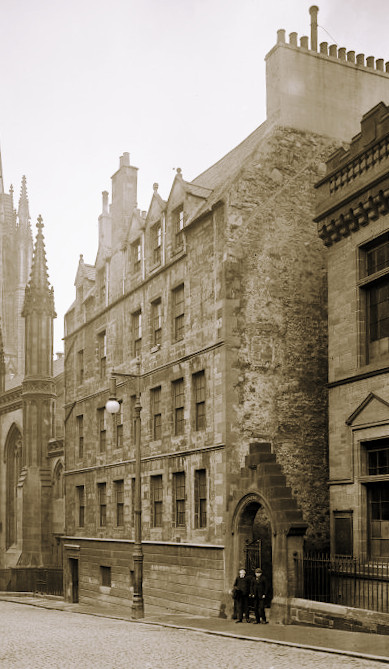Tragically the two year old daughter Elizabeth died later that year, and on the burial record, Archibald was a leather cutter at Eglinton street in Tradeston. The next year, 1836, there was a listing in the Postal Directory for McIntyre Archibald, & Co. Boot and c. maker, at numbers 7 and 9 Eglinton street.Boswell's Court
Catherine Halling's Will dated 1837 refers to the couple as, "Jessie Halling my daughter wife of Archibald McIntyre residing in Eglinton Street Tradeston near Glasgow". In 1837, Archibald must have been joined by his father, as the listing in Pigot's directory was for McIntyre Duncan, boot & c. maker, 9 Eglinton street. Then, they were gone. Perhaps Duncan, the father, had died, and Archibald had left with his family for Edinburgh.
They surface again on the record for the census of 1841, living at Boswell's Court, 392 Castlehill, near the Edinburgh Castle. Archibald was then working as a turnkey at a prison, possibly at the Canongate Tolbooth. Later that year when the son John Archibald was born, Archibald had already moved on to being a Gentleman's Servant.
That was the occupation he held for at least the next four years, and when Eglantine was born in 1845, the family had moved to 18 Wrights Houses opposite the Bruntsfield Golf Links. By the 1851 census, they were a few doors down at 26 Wrights Houses, joined by another two of Archibald and Jessie's children William and Mary, but with Jessie as the head of the household and Archibald not mentioned.Off to Australia
Brothers John, Donald, William, Archibald, Allan and Duncan Kennedy at one time or another, all migrated to Australia. Archibald and his wife Jessie and their six children, including their son Duncan and his wife Isabella and both their children, also made the big trip across the ocean. William, having been convinced by Dr John Dunmore Lang to become a minister for the colony, left in 1837. He returned to Scotland in 1854 to pick up reinforcement in the form of his brothers Allan and Duncan Kennedy.
Well, I wish I was
On some Australian mountain range
I got no reason to be there, but I
Imagine it would be
Some kind of change
- Bob Dylan, Outlaw Blues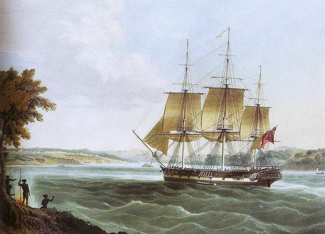Sister Catherine, known as Ket, married Ewen McKinnon in 1812 and three of their daughters also migrated to Australia. One of those daughters, Sarah McKinnon, married William's friend Rev. James McCulloch in Australia. In fact in 1854, James McCulloch had accompanied William, Allen, Duncan Kennedy and niece Sarah, and her sisters Joanna and Margaret, and their husbands to Australia all on the same ship, the Berhampore.Entering Sydney Harbour
Brother Alexander became a school teacher, lived in Glasgow and then in Doune, married Sarah McKenzie in 1833, had five children and eventually became a Preacher of the Gospel like his brothers. Later in life he moved back to Tradeston in Glasgow, with his entire family, and lived there till passing away in 1883.
Whatever happened to the other children of Duncan and Catherine, namely Ann, Angus, Neil and Ewen is somewhat more difficult to discover. Claims of migrating to Canada and having families there look equally likely and unlikely.
About Us
We are the descendants of Anglo-Scottish-Prusso-Germanic Australian migrants who settled in the newly formed colonies of New South Wales and Queensland in the nineteenth century. The idea behind these pages is to present the stories and characters of those early settlers along with information about their origins, descendants, families, whereabouts and activities.There are often themes running through their struggles and achievements telling a tale of resourcefulness and hardships in an alien world. The paradox of Australia as an ancient and raw continent and as a 'New World' portrays a collision of ideals and realities yet still shows a continuity in how those people dealt with everyday life.